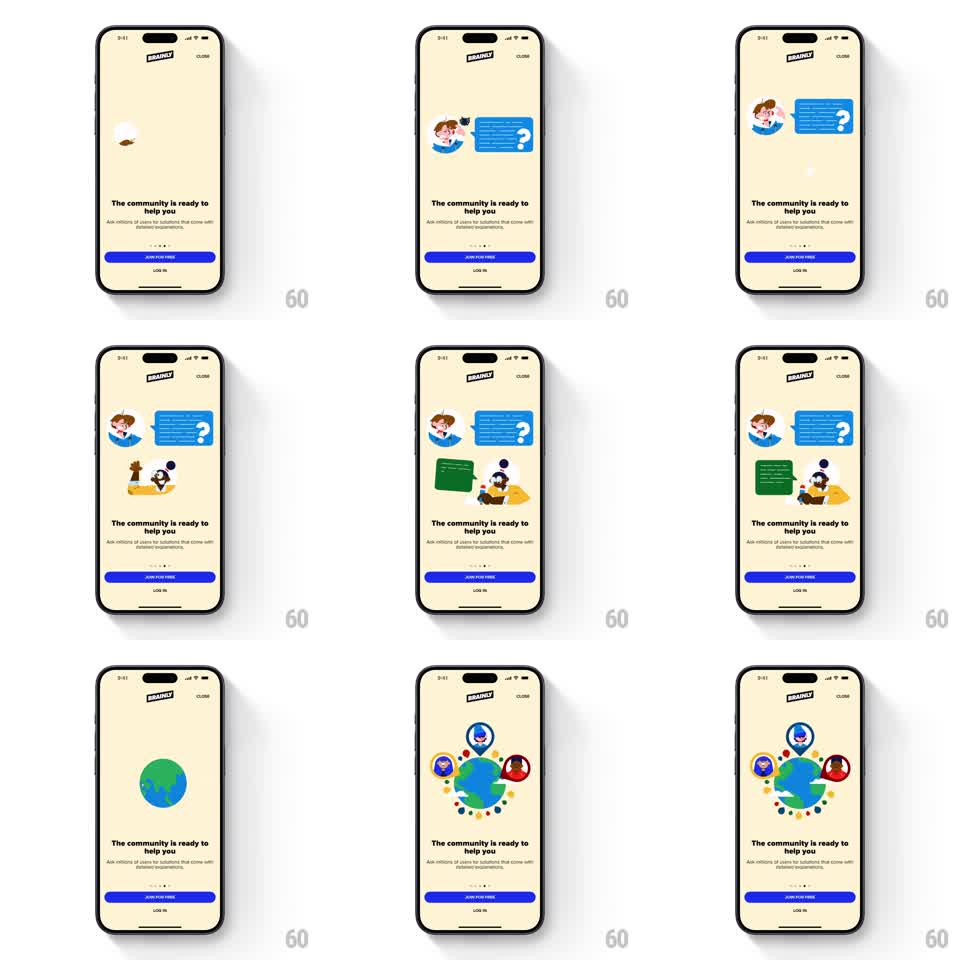

Media
Frame-by-frame

Rebuild this animation 1:1: Brainly's community onboarding story - on a cream screen, a question scene pops in piece by piece (student, question bubble, expert, answer bubble), then the scene morphs into a globe ringed by avatars while the headline and buttons stay fixed.

Rebuild this animation 1:1: Brainly's community onboarding story - on a cream screen, a question scene pops in piece by piece (student, question bubble, expert, answer bubble), then the scene morphs into a globe ringed by avatars while the headline and buttons stay fixed. ## Integration Integration: stack-agnostic spec - springs given as stiffness/damping, timed motions as duration + curve; map every value to your framework and animation library of choice. ## Scene Cream onboarding screen: Brainly logo top-left, CLOSE top-right, headline "The community is ready to help you" with a sub-line, page dots, a blue JOIN FOR FREE button, LOG IN below. The upper half is a stage where flat illustrations appear: a lightbulb, a student avatar with a blue question speech bubble, an expert character at a desk with a green answer bubble, then a globe with orbiting avatars and location pins. ## Motion spec Pattern: staggered pop-in illustration sequence with a scene morph. - Each element enters with a spring pop (scale 0.5 to 1.0, stiffness ~350, damping ~18): lightbulb first, then the student sliding up from the bottom-left, then the question bubble popping from the student's side. - The expert and green answer bubble follow below (same pop, ~400ms later). - After a beat (~1s), the scene morphs: bubbles and characters scatter and shrink while a globe scales up at center (400ms, ease-in-out), then avatar chips and pins pop into orbit around it one by one (staggered 100ms, same spring). - Headline, buttons, and logo never move - only the illustration stage animates. ## Calibration - Pops should feel snappy with a single overshoot; damping under ~16 makes the flat illustration wobble cheaply. - The morph to the globe is the payoff - give it a clean pause before it starts. ## Reduced motion The final globe composition fades in whole over 300ms; no sequence. ## Don't miss - Elements enter from sensible origins (characters from below, bubbles from their speakers) - not all from center. - The sequence is a story: question asked, answer given, community revealed. Keep the beats in order.